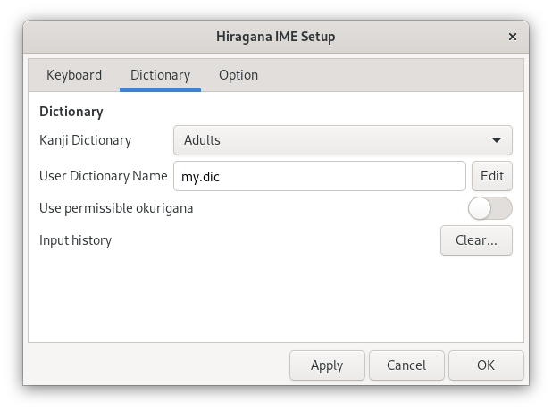

Settings
Hiragana IME Setup Window
You can customize Hiragana IME in the Hiragana IME Setup window. To open the Hiragana IME Setup window, select Setup from the keyboard menu in the desktop top bar.

The Hiragana IME Setup window has the following three tabs:
| Description | |
|---|---|
| Keyboard | Switch between Kana input and Rōmaji input. |
| Dictionary | Select the kanji dictionary. |
| Option | Choose the optional settings. |
Keyboard Tab
In the Keyboard tab, you can select the Japanese input method using the keyboard.
Choose the Japanese input method you like from the Input drop-down list:
| Input | Description |
|---|---|
| Rōmaji | Use Rōmaji. |
| Kana (JIS Layout) | Use the standard JIS Kana layout. |
| Use New Stickney Kana layout. |
Rōmaji input and Kana input are commonly used when entering Japanese sentences using the keyboard. Rōmaji input is taught in the third grade at school. You can use Kana input even if you are unfamiliar with Rōmaji. Using Kana input, you can enter Japanese sentences with fewer keystrokes than using Rōmaji input.
Always convert 'nn' to 'ん'
If you want to enter 'ん' by typing nn, enable Always convert 'nn' to 'ん' option.
| Option | Input | Output |
|---|---|---|
| Enabled | konnnitiha | こんにちは |
| Disabled | konnitiha | こんにちは |
Note: This classic Japanese word processor method is incorrect as Rōmaji spelling. The JIS standard X4063, which defined this method, was deprecated in 2010.
Dictionary Tab
In the Dictionary tab, you can set up the dictionaries used for kana-kanji conversion.

Kanji Dictionary
Choose your preferred dictionary from the Kanji Dictionary drop-down list. Hiragana IME offers dictionaries for elementary, middle, and high school students, as well as for adults. Details about the grade-specific dictionaries are described in the Hiragana IME Dictionary.
User Dictionary Name
You can add words to your personal dictionary if you can not find them in Hiragana IME dictionaries. You may switch among multiple user dictionaries.
Enter the preferred user dictionary file name in the User Dictionary Name textbox.
By default, 'my.dic' is used.
Your dictionaries are stored in the directory ~/.local/share/ibus-hiragana/.
Click Edit to edit your dictionary. The file format of the Hiragana IME dictionary is described in Editing Dictionaries.
Use permissible okurigana
Okurigana are hiragana suffixes attached to words written with kanji characters. Guidelines on using okurigana have been issued as a public notice through the Prime Minister in Japan. Children learn these rules at school.
In practice, there are variations in okurigana. Turn on the Use permissible okurigana switch to use permissible okurigana.
Examples:
| Main rules | Permissible rules |
|---|---|
| ãŠå¤‰æ›ã¨ã™ → 落とす | ãŠã¨å¤‰æ›ã™ → è½ã™ |
| ãŠã“ãªå¤‰æ›ã£ã¦ → 行って | ãŠã“変æ›ãªã£ã¦ → 行なって |
| ã¨ã©å¤‰æ›ã‘ã§å¤‰æ› → 届け出 | ã¨ã©ã‘ã§å¤‰æ› → 届出 |
Understanding the okurigana rules can be quite challenging. Without furigana, '行って' and '行って' cannot be distinguished by the main rules alone. On the other hand, people who are knowledgeable about kanji do not struggle with reading 'è½ã™'. The public notice does not mandate using kanji; it simply provides guidelines on how to add or remove okurigana when using kanji. In the Japanese version of this guide, most Japanese words are written only in hiragana.
Input history
In the conversion candidate window, frequently used words will appear at the top of the list. To reset all orders to their initial state, click the Clear… button. Then, click OK when the following message box appears.
Option Tab
In the Option tab, you can customize the input assistance features.

Use half-width digits for Arabic numerals
When enabled, Hiragana IME enters Arabic numerals using half-width letters, even in Hiragana mode.
| Setting | Example |
|---|---|
| Off | １２、３４５。６７８ |
| On | 12,345.678 |
Combine '^' to the previous vowel character in alphanumeric mode
Enable this option if you want to write Japanese in Kunrei-shiki Rōmaji. When you type ^ after a vowel character in Alphanumeric mode, it is combined into a single character.
- Example: a^ → â
When you type ^ after a vowel character combined with a circumflex, it is separated back into a vowel and '^'.
- Example: â^ → a^
Combine '~' to the previous vowel character in alphanumeric mode as '¯'
Enable this option if you want to write Japanese in Hepburn romanization. When you type ~ after a vowel character in Alphanumeric mode, it is combined into a single character as '¯'.
- Example: a~ → ā
When you type ~ after a vowel character combined with a macron, it is separated back into a vowel and '~'.
- Example: ā~ → a~
Use LLM for candidate selection
When enabled, Hiragana IME calculates the probabilities of each candidate's occurrence in the surrounding text and pre-selects the most probable candidate in the candidate window.
For example, when converting 'かいとう', the pre-selected candidate changes as below:
- アンケートã«ã‹ã„ã¨ã†å¤‰æ› → アンケートã«å›ç”
- å•é¡Œã®ã‹ã„ã¨ã†å¤‰æ› → å•é¡Œã®è§£ç”
Use CUDA for LLM calculation
When enabled, Hiragana IME uses CUDA to calculate the probabilities of each candidate's occurrence with LLM. If your PC has an NVIDIA GPU, you can reduce the time it takes for the candidate to appear after pressing the conversion key.
Note:Â An NVIDIA driver is necessary to use CUDA with your GPU. Newer Fedora and Ubuntu offer NVIDIA drivers from the official software repositories. If the driver is successfully installed, you can see your GPU model name in the About dialog box.
Install required packages for using LLM
By clicking the Install… button, you can install the required packages to use LLM for candidate selection. For more details, please see "Install additional components for using LLM".